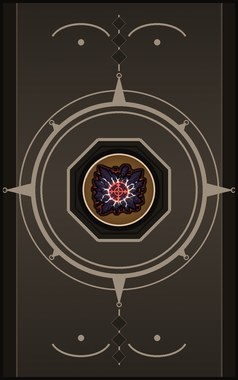
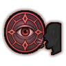

Veritas seal C
C-rank. Place a truth seal on a prisoner: their resistance to recruitment crumbles.
| Rank | Chakra | Cooldown | Class level |
|---|---|---|---|
| C | 20 | 25 s | 5 |

Technique trees › Skills and beast arts
3 techniques · Ninjutsu tab
Learned from technique scrolls, mission rewards, written scrolls and scroll merchants; some NPC ninja know it. It counts toward the ninja build like other trees.
C-rank. Place a truth seal on a prisoner: their resistance to recruitment crumbles.
| Rank | Chakra | Cooldown | Class level |
|---|---|---|---|
| C | 20 | 25 s | 5 |

B-rank passive. Trained by the seal: you always know when someone lies.
B-rank. Force the truth on one enemy: they reel, confused.
| Rank | Chakra | Cooldown | Class level |
|---|---|---|---|
| B | 35 | 25 s | 9 |